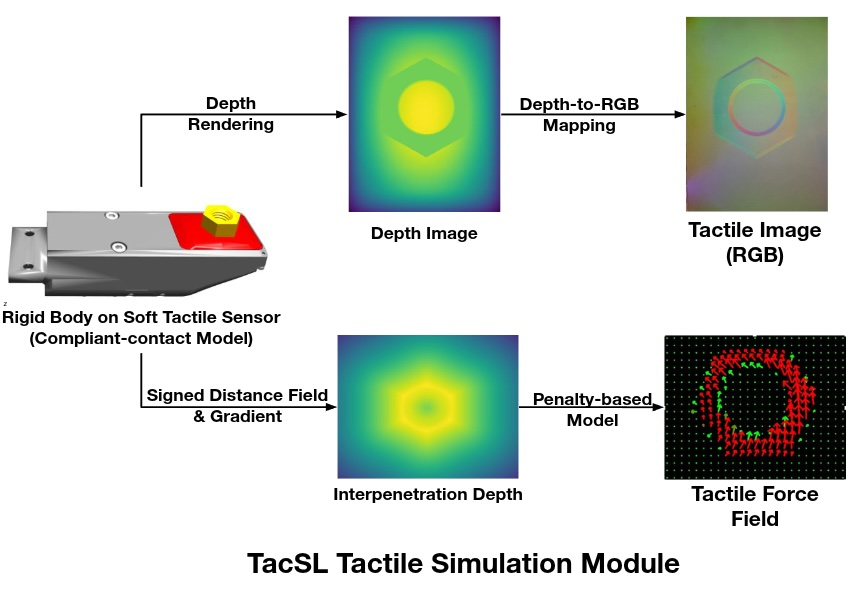
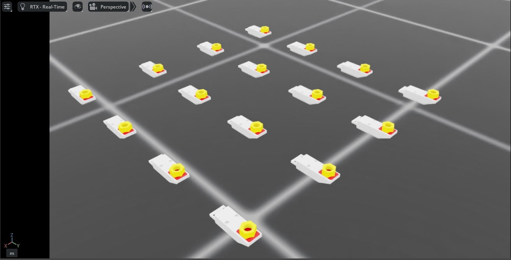
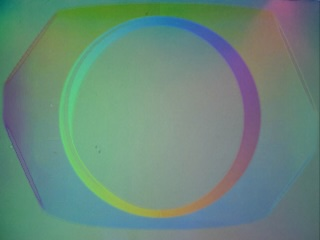
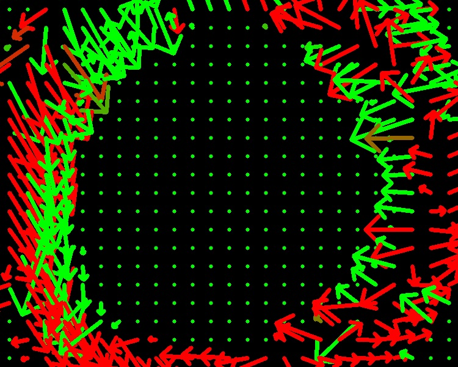

视触觉传感器#
Isaac Lab 中的视触觉传感器通过与 TacSL（触觉传感器学习）[Akinola2025]_ 集成，提供逼真的触觉反馈。它旨在模拟高保真触觉交互，生成视觉和力反馈数据，模拟真实世界的触觉传感器（如 GelSight 设备）。该传感器可以提供触觉 RGB 图像、力场分布以及其他中间触觉测量数据，这些对于需要精细触觉反馈的机器人操作任务至关重要。

配置#
触觉传感器需要特定的配置参数来定义其行为和数据采集属性。传感器可以配置各种参数，包括传感器分辨率、力敏感度和输出数据类型。
from isaaclab.sensors import TiledCameraCfg
from isaaclab_assets.sensors import GELSIGHT_R15_CFG
import isaaclab.sim as sim_utils
from isaaclab_contrib.sensors.tacsl_sensor import VisuoTactileSensorCfg
# Tactile sensor configuration
tactile_sensor = VisuoTactileSensorCfg(
prim_path="{ENV_REGEX_NS}/Robot/elastomer/tactile_sensor",
## Sensor configuration
render_cfg=GELSIGHT_R15_CFG,
enable_camera_tactile=True,
enable_force_field=True,
## Elastomer configuration
tactile_array_size=(20, 25),
tactile_margin=0.003,
## Contact object configuration
contact_object_prim_path_expr="{ENV_REGEX_NS}/contact_object",
## Force field physics parameters
normal_contact_stiffness=1.0,
friction_coefficient=2.0,
tangential_stiffness=0.1,
## Camera configuration
camera_cfg=TiledCameraCfg(
prim_path="{ENV_REGEX_NS}/Robot/elastomer_tip/cam",
update_period=1 / 60, # 60 Hz
height=320,
width=240,
data_types=["distance_to_image_plane"],
spawn=None, # camera already spawned in USD file
),
)
配置支持自定义以下内容:
渲染配置: 使用预定义配置（例如来自
isaaclab_assets.sensors的GELSIGHT_R15_CFG、GELSIGHT_MINI_CFG）指定 GelSight 传感器渲染参数- 触觉模态:
enable_camera_tactile- 通过相机传感器启用触觉 RGB 成像enable_force_field- 启用力场计算和可视化
力场网格: 设置触觉网格尺寸（
tactile_array_size）和边距，这直接影响计算力场的空间分辨率接触对象配置: 使用 prim 路径表达式定义交互对象的属性，以定位具有 SDF 碰撞网格的对象
- 物理参数: 控制传感器的力场计算:
normal_contact_stiffness,friction_coefficient,tangential_stiffness- 法向刚度、摩擦系数和切向刚度
- 相机设置: 配置分辨率、更新速率和数据类型，目前仅支持
distance_to_image_plane（depth的别名）。 spawn默认设置为None，这意味着相机已在 USD 文件中生成。如果您想自己生成相机并设置焦距等，可以将 spawn 配置设置为有效的生成配置。
- 相机设置: 配置分辨率、更新速率和数据类型，目前仅支持
配置要求#
重要
传感器正常运行必须满足以下要求:
- 相机触觉成像
如果
enable_camera_tactile=True，必须提供有效的camera_cfg（TiledCameraCfg）及适当的相机参数。- 力场计算
如果
enable_force_field=True，需要以下参数:contact_object_prim_path_expr- 用于定位具有 SDF 碰撞网格的接触对象的 Prim 路径表达式
- SDF 计算
当启用力场计算时，使用符号距离场（SDF）查询计算基于惩罚的法向力和剪切力。要实现 GPU 加速:
交互对象应具有 SDF 碰撞网格
必须在初始化期间定义 SDFView，因此应在仿真之前指定交互对象。
- 弹性体配置
传感器的
prim_path必须配置为 USD 层次结构中弹性体 prim 的子级。力场计算的查询点是从弹性体网格表面计算的，该网格在弹性体的 prim 路径下搜索。- 物理材质
传感器使用物理材质来配置弹性体的柔顺接触属性。默认情况下，物理材质属性已在 USD 资产中预配置。但是，您可以在生成机器人时通过在
UsdFileWithCompliantContactCfg中指定以下参数来覆盖这些属性:compliant_contact_stiffness- 弹性体表面的接触刚度compliant_contact_damping- 弹性体表面的接触阻尼physics_material_prim_path- 应用物理材质的 Prim 路径（通常为"elastomer"）
如果任何参数设置为
None，将保留 USD 资产中的相应属性。
使用示例#
要在仿真环境中使用触觉传感器，请运行演示:
cd scripts/demos/sensors
python tacsl_sensor.py --use_tactile_rgb --use_tactile_ff --tactile_compliance_stiffness 100.0 --tactile_compliant_damping 1.0 --contact_object_type nut --num_envs 16 --save_viz --enable_cameras
可用的命令行选项包括:
--use_tactile_rgb: 启用基于相机的触觉感知--use_tactile_ff: 启用力场触觉感知--contact_object_type: 指定接触对象的类型（螺母、立方体等）--num_envs: 并行环境数量--save_viz: 保存可视化输出以供分析--tactile_compliance_stiffness: 覆盖柔顺接触刚度（默认: 使用 USD 资产值）--tactile_compliant_damping: 覆盖柔顺接触阻尼（默认: 使用 USD 资产值）--normal_contact_stiffness: 力场计算的法向接触刚度--tangential_stiffness: 剪切力的切向刚度--friction_coefficient: 剪切力的摩擦系数--debug_sdf_closest_pts: 可视化最近的 SDF 点以进行调试--debug_tactile_sensor_pts: 可视化触觉传感器点以进行调试--trimesh_vis_tactile_points: 启用基于 trimesh 的触觉点可视化
要获取完整的可用选项列表:
python tacsl_sensor.py -h
备注
演示示例基于 Gelsight R1.5，这是一款已停产的原型传感器。相同的程序可以适配其他视触觉传感器。

触觉传感器支持多种数据模态，提供关于接触交互的全面信息:
输出触觉数据#
- RGB 触觉图像
当物体与传感器表面接触时实时生成触觉 RGB 图像。这些图像显示变形模式和接触几何形状，类似于凝胶基触觉传感器 [Si2022]
- 力场
传感器表面详细的接触力场和压力分布，包括法向和剪切分量。
 |
 |
与学习框架集成#
触觉传感器设计为与强化学习和模仿学习框架无缝集成。结构化的张量输出可以直接用作学习算法中的观测值:
def get_tactile_observations(self):
"""Extract tactile observations for learning."""
tactile_data = self.scene["tactile_sensor"].data
# tactile RGB image
tactile_rgb = tactile_data.tactile_rgb_image
# tactile depth image
tactile_depth = tactile_data.tactile_depth_image
# force field
tactile_normal_force = tactile_data.tactile_normal_force
tactile_shear_force = tactile_data.tactile_shear_force
return [tactile_rgb, tactile_depth, tactile_normal_force, tactile_shear_force]
参考文献#
Akinola, I., Xu, J., Carius, J., Fox, D., & Narang, Y. (2025). TacSL: A library for visuotactile sensor simulation and learning. IEEE Transactions on Robotics.
Si, Z., & Yuan, W. (2022). Taxim: An example-based simulation model for GelSight tactile sensors. IEEE Robotics and Automation Letters, 7(2), 2361-2368.